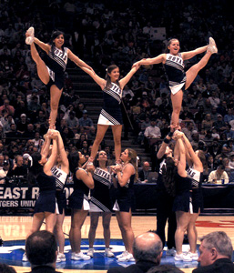
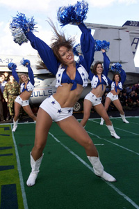
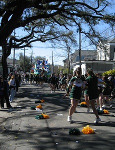
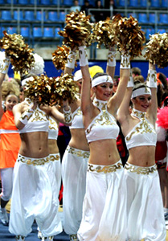

Cheerleading is a sport and a 109 year old institution that uses organized routines made from elements of tumbling, dance, and stunting to direct the events spectators to cheer on sports teams at games and matches and/or compete at cheerleading competitions. The athlete involved is called a cheerleader. With an estimated 1.5 million participants in allstar cheerleading (not including the millions more in high school, college or little league participants) in the United States alone, cheerleading is, according to Newsweek's Arian Campo-Flores, "the most quintessential of American sports." The growing presentation of the sport to a global audience has been led by the 1997 start of broadcasts of cheerleading competition by ESPN International and the worldwide release of the 2000 film Bring it On. Due in part to this recent exposure, there are now an estimated 100,000 participants scattered around the rest of the world in countries including Australia, China, Colombia, France, Germany, Japan, the Netherlands, and New Zealand.
Cheerleading first appeared in the United States in the late 1880s with the crowd chanting as a way to encourage school spirit at athletic events. The first organized, recorded cheer was yelled "Ray, Ray' Ray! TIGER, TIGER, SIS, SIS, SIS! BOOM, BOOM, BOOM! Aaaaah! PRINCETON, PRINCETON, PRINCETON!" at Princeton University in 1884. A few years later, Princeton graduate, Thomas Peebles introduced the idea of organized crowd cheering at football games to the University of Minnesota. However, it was not until 1898 that University of Minnesota student Johnny Campbell directed a crowd in cheering "Rah, Rah, Rah! Sku-u-mar, Hoo-Rah! Hoo-Rah! Varsity! Varsity! Varsity, Minn-e-So-Tah!”, making Campbell the very first cheerleader and November 2, 1898 the official birth date of organized cheerleading. Soon after, the University of Minnesota organized a "yell leader" squad of 6 male students, who still use Campbell's original cheer today In 1903 the first cheerleading fraternity, Gamma Sigma was founded. Cheerleading started out as an all-male activity, but females began participating in the 1923, due to limited availability of female collegiate sports. At this time, gymnastics, tumbling, and megaphones were incorporated into popular cheers. Today it is estimated that 97% of cheerleading participants are female, but males still makeup 50% of collegiate cheering squads.
In 1948, Lawrence "Herkie" Herkimer, of Dallas, TX and a former cheerleader at Southern Methodist University formed the National Cheerleaders Association (NCA) as a way to hold cheerleading clinics. In 1949, The NCA held its first clinic in Huntsville, TX with 52 girls in attendance. "Herkie" contributed many "firsts" to the sport including the founding of Cheerleader & Danz Team uniform supply company, inventing the herkie, (where one leg is bent towards the ground and the other is out to the side as high as it will stretch in the toe touch position) and creating the "Spirit Stick". By the 1960s, college cheerleaders began hosting workshops across the nation, teaching fundamental cheer skills to eager high school age girls. In 1965, Fred Gastoff invented the vinyl pom-pon and it was introduced into competitions by the International Cheerleading Foundation (now the World Cheerleading Association or WCA). Organized cheerleading competitions began to pop up with the first ranking of the "Top Ten College Cheerleading Squads" and "Cheerleader All America" awards given out by the International Cheerleading Foundation in 1967. In 1978, America was introduced to competitive cheerleading by the first broadcast of Collegiate Cheerleading Championships on CBS
In the 1960's National Football League (NFL) teams began to organize professional cheerleading teams. The Baltimore Colts (now the Indianapolis Colts) was the first NFL team to have an organi;zed cheerleading squad. It was the Dallas Cowboys Cheerleaders who gained the spotlight with their revealing outfits and sophisticated dance moves, which debuted in the 1972-1973 season, but were first seen widely in Super Bowl X (1976). This caused the image of cheerleaders to permanently change, with many other NFL teams emulating them. Most of the professional teams' cheerleading squads would more accurately be described as dance teams by today's standards; as they rarely, if ever, actively encourage crowd noise or perform modern cheerleading moves.
The 1980s saw the onset of modern cheerleading with more difficult stunt sequences and gymnastics being incorporated into routines. ESPN first broadcasted the National High School Cheerleading Competition nationwide in 1983. Cheerleading organizations such as the American Association of Cheerleading Coaches and Advisors (AACCA) started applying universal safety standards to decrease the number of injuries and prevent dangerous stunts, pyramids and tumbling passes from being included in routines. In 2003, the National Council for Spirit Safety and Education (NCSSE) was formed to offer safety training for youth, school, all star and college coaches. The NCAA requires college cheer coaches to successfully complete a nationally recognized safety-training program. The NCSSE or AACCA certification programs are both recognized by the NCAA.
Today, cheerleading is most closely associated with American football and basketball. Sports such as soccer, ice hockey, volleyball, baseball, and wrestling sometimes sponsor cheerleading squads. The ICC Twenty20 Cricket World Cup in South Africa in 2007 was the first international cricket event to have cheerleaders. The Florida Marlins were the first Major League Baseball team to have cheerleaders. Debuting in 2003, the "Marlin Mermaids" gained national exposure and have influenced other MLB teams to develop their own cheer/dance squads.
Cheerleading's increasing popularity in recent decades has made it a prominent feature in high-school themed movies and television shows. The 2000 film Bring It On, about a San Diego high school cheerleading squad called "The Toros", was a surprise hit, earned nearly $70 million and spawned two sequels. It was followed in 2001 by another teen cheerleading comedy, Sugar & Spice. In 1993, The Positively True Adventures of the Alleged Texas Cheerleader-Murdering Mom was an acclaimed TV movie which told the true story of Wanda Holloway, the Texas mother whose obsession with her daughter's cheerleading career made headline news.